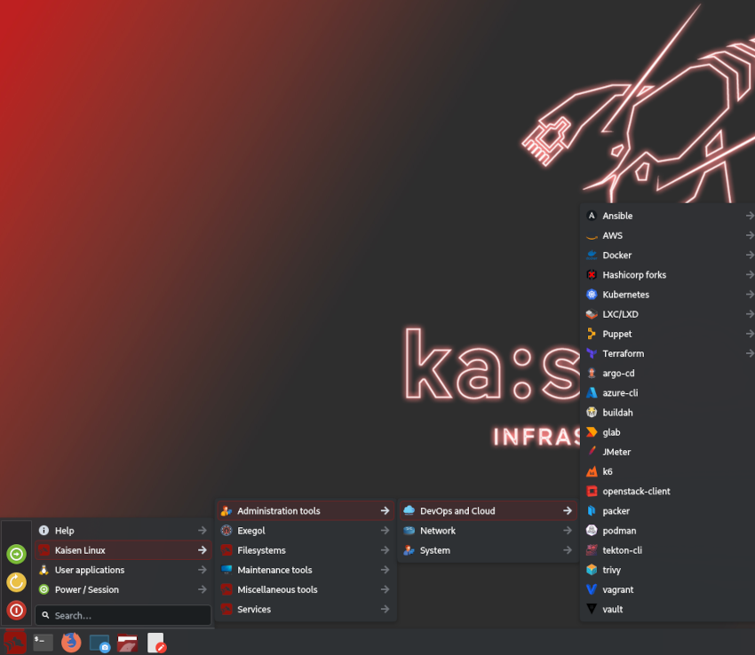

Kaisen Linux | Manpages
This documentation contains 697 of configuration manuals from section 5 of kaisenlinux manpages.

Manpages by command name
You can switch to sorted manpages by command name by clicking here
Tools by categories manpages
You can also switch to sorted manpages tools categories by clicking here
Other Links
- Check the official Kaisen Linux website.
- Check the official Kaisen Linux documentation.
- Check Debian testing manpages for additionnal help.
Contributors
Manpages for Kaisen Linux made by Arnaud Cormier and Kevin Chevreuil